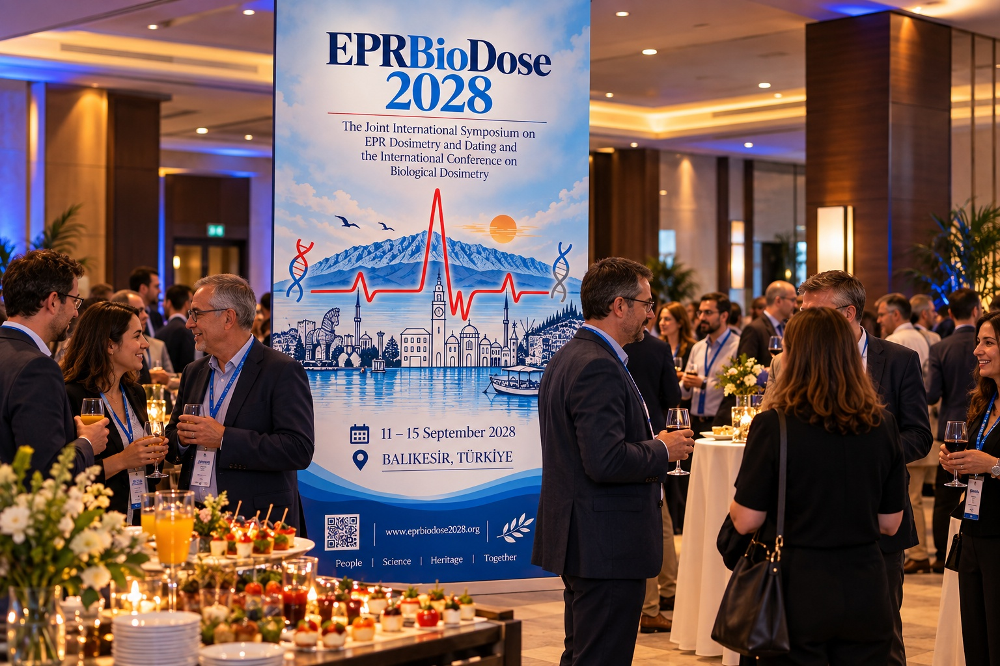
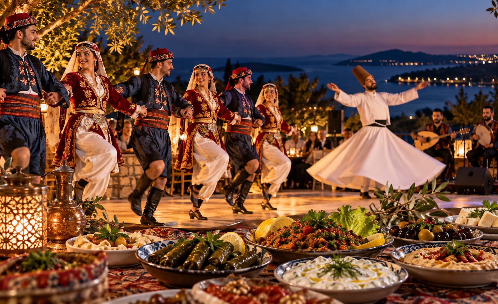
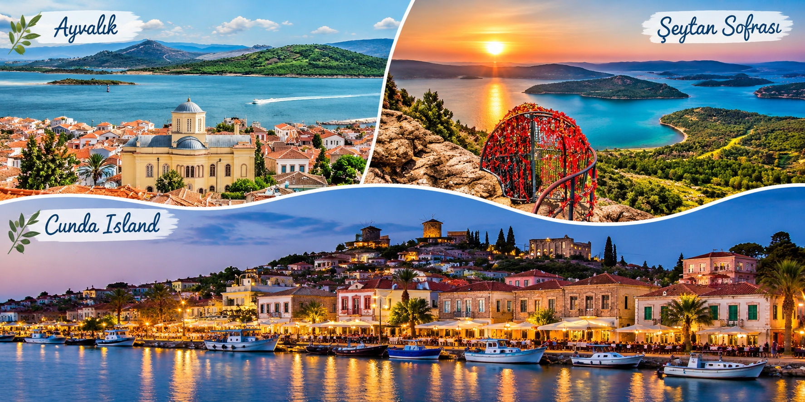
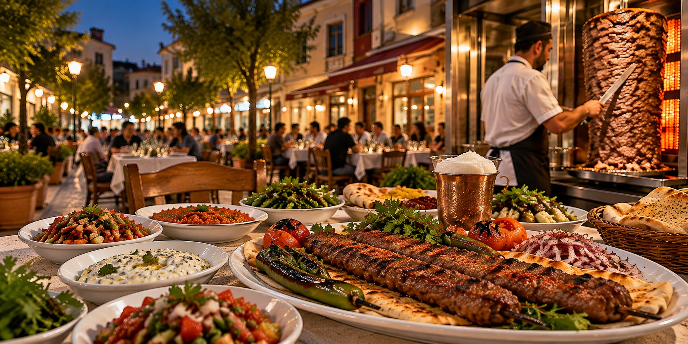
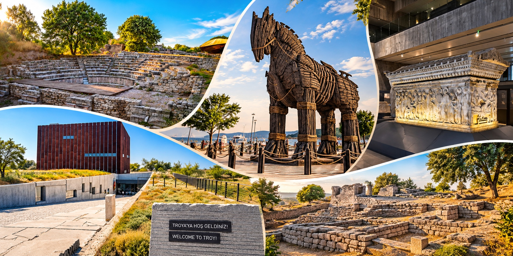
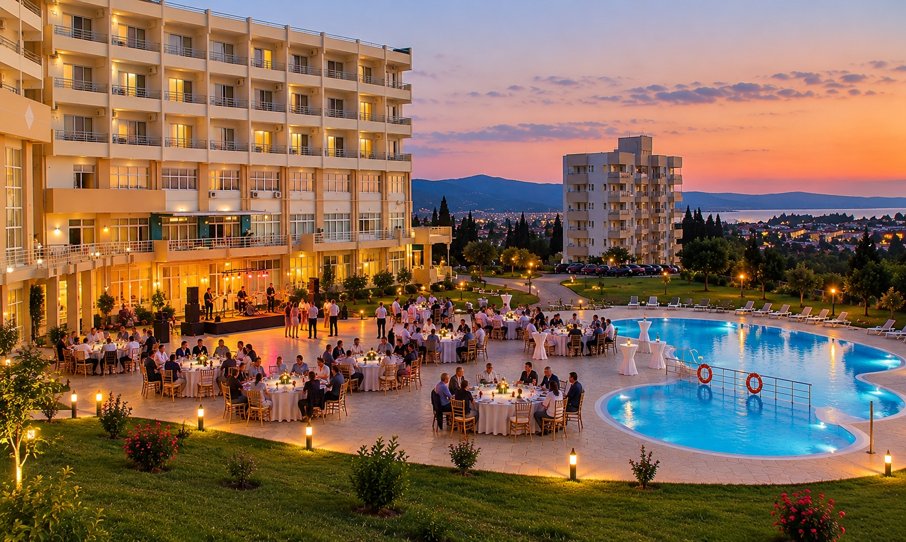

Ice Breaker Reception
Sunday, 10 September 2028 | 19:00-23:00

- A warm welcome reception for conference participants
- Canapés and drinks in a relaxed atmosphere
- A traditional opening event bringing the international EPRBioDose community together
- Location: To be announced
Turkish Night
Monday, 11 September 2028 | 19:00-23:00

- A festive evening celebrating Turkish culture and traditions
- Traditional Turkish folk dances
- Whirling dervish performance
- Traditional Turkish foods
- Location: To be announced
Ayvalık – Şeytan Sofrası – Cunda Tour
Tuesday, 12 September 2028 | 13:30-17:00

- Ayvalık and Cunda Island
- Visit to Şeytan Sofrası
- Scenic views of the Aegean coast
- Explore the historic streets and waterfront of Cunda
Free Evening in Cunda
Tuesday, 12 September 2028 | 17:00-22:00
- Free time to explore Cunda Island
- Enjoy dinner at one of the island's waterfront restaurants
- Fresh seafood and local Aegean specialties
- Restaurant suggestions will be provided by the Local Organizing Committee
- Dinner is at participants' own expense
Kebab and Döner at Burhaniye
Wednesday, 13 September 2028 | 19:00–23:00

- Dinner at a local restaurant in Burhaniye
- Traditional Turkish cuisine featuring döner, Adana kebab and a selection of mezes
- An opportunity to enjoy Turkish cuisine
- Location: To be announced
Troy Ancient City Tour
Thursday, 14 September 2028 | 10:30-17:00

- Visit to the ancient city of Troy
- Explore the archaeological site and ancient ruins
- Visit to the Troy Museum
- See a replica of the iconic Trojan Horse
Poolside Banquet at BUBYO
Thursday, 14 September 2028 | 19:30-23:00

- Evening banquet by the pool at BUBYO Applied Hotel
- Dinner featuring Turkish and local Aegean cuisine
- Music and entertainment
- An informal evening with conference participants